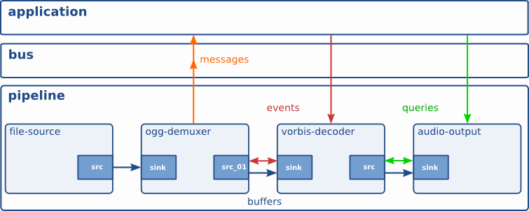
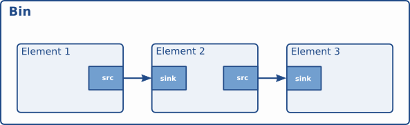

GStreamer
GStreamer is a multimedia framework for building audio and video applications. It works by connecting small processing blocks, called elements, into a pipeline. Each element has a focused job: read media, decode it, convert it, encode it, display it, save it, or send it over the network.
A pipeline moves buffers from a source element to one or more processing elements and finally to a sink element.
flowchart LR
A["Source<br/>camera, file, network"] --> B["Element<br/>decoder"]
B --> C["Element<br/>converter/filter"]
C --> D["Sink<br/>screen, file, stream"]install
Basic GStreamer terms
Use the pipeline image as a map: data usually moves from left to right, from a source, through elements, and into a sink. Control messages and questions can also move between elements.

Pipeline
A pipeline is the full media graph. It owns the elements and controls their
state: NULL, READY, PAUSED, and PLAYING.
| Simple test video pipeline | |
|---|---|
This pipeline creates test video, converts it to a display format, and shows it on the screen.
Element
An element is one processing block inside the pipeline. Each element has one job.
videotestsrccreates video frames.videoconvertconverts video format when needed.autovideosinkdisplays the video.
Pad
A pad is the connection point of an element.
- A src pad sends data out.
- A sink pad receives data in.
In this example, videotestsrc has a source pad connected to the sink pad of
videoconvert:
caps
Caps
In GStreamer, caps means capabilities: a description of what kind of media data can flow through a pad.
A caps string between elements is usually a shorthand for inserting a capsfilter element.
Note
“At this exact point in the pipeline, only buffers matching this format may pass.”
Auto negotiation
GStreamer negotiates automatically. videotestsrc may produce many possible raw video formats. videoconvert can convert between formats. autovideosink chooses a real video sink available on your system.
GStreamer tries to find a compatible format that all linked elements can handle.
Caps are attached to pads
Every GStreamer element has pads.

Demo
A's output and B's input must agree on video/x-raw,format=BGR.
Only BGR raw video may pass from element_a to element_b.
Warning
It does not perform conversion itself. only videoconvert,videoscale and videorate are actually change the data
using gst-inspect we can check the capability of element pads
usage
Note
Quoting is especially useful when caps contain parentheses or lists.
Common example
- videoscale handles width/height
- videorate handles framerate
- videoconvert handles pixel format
Rate
Note
videorate understand that downstream the pipe expected to video at 10 HZ
| control rate | |
|---|---|
TODO: explain how videorate handler down and up rate
scale
format
Source
A source is an element that starts data flow. It can read from a camera, file, network stream, or generate test data.
| Camera source | |
|---|---|
Sink
A sink is an element that ends data flow. It can show video, play audio, write a file, or send data to the network.
| Write test video to a file | |
|---|---|
Buffer
A buffer is one chunk of media data moving through the pipeline. For video, one buffer is usually one frame. For audio, one buffer is usually a small group of samples.
Example flow:
Bus
The bus carries messages from the pipeline to the application. The application uses it to read errors, end-of-stream messages, warnings, and state changes.
| Show bus messages while running | |
|---|---|
When the source sends 30 buffers, the pipeline posts an EOS message on the
bus.
Event
An event is a control signal that travels through pads. Events are used for actions like start, stop, seek, flush, and end-of-stream.
| Finite pipeline that sends EOS | |
|---|---|
After 10 buffers, videotestsrc sends an EOS event downstream to fakesink.
Query
A query asks an element or pipeline for information. Common queries ask for duration, current position, latency, or supported capabilities.
| Inspect element pads and caps | |
|---|---|
For example, an application can query a playing file pipeline for the current position to update a progress bar.
Logging
GStreamer uses debug categories and levels to control log output. The main
environment variable is GST_DEBUG, which can enable logs globally or for
specific categories.
Common debug levels are:
0: none1: errors2: warnings3: info4: debug5: log6and higher: very verbose tracing
| Show warning and error logs | |
|---|---|
| Show debug logs for all categories | |
|---|---|
You can also target one category instead of enabling noisy logs for the whole pipeline.
| Show detailed logs only for caps negotiation | |
|---|---|
Multiple categories can be combined with commas.
| Debug filesrc and decodebin | |
|---|---|
To save logs to a file, set GST_DEBUG_FILE.
| Write logs to a file | |
|---|---|